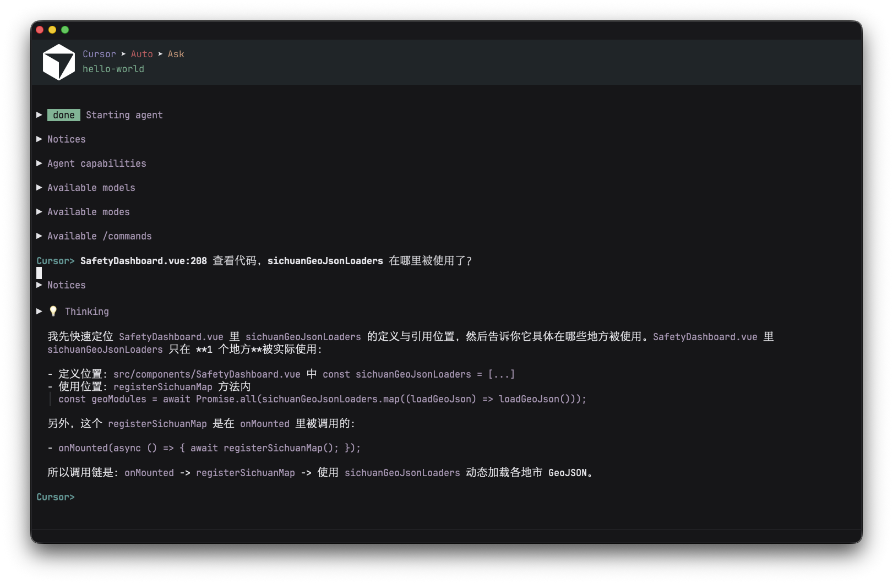
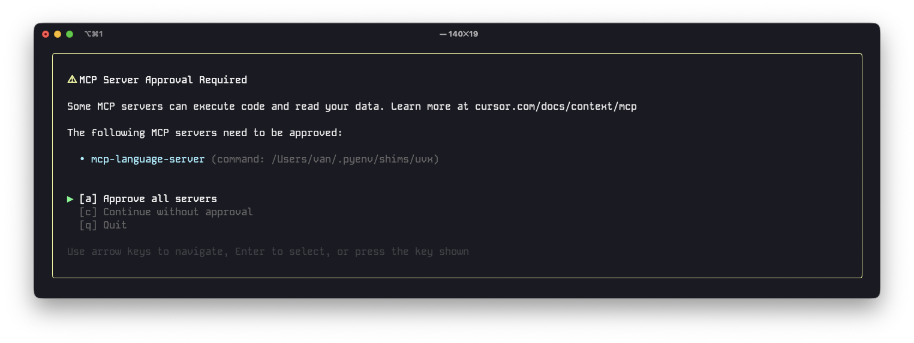

Agent Shell Cursor Agent Cli
A lightweight workflow for using agent-shell in Emacs together with Cursor’s agent CLI.
Background: why I changed my workflow
For a long time, my flow was fragmented:
- Write and review code in Emacs.
- Jump to another tool for AI-assisted coding.
- Come back to Emacs for final cleanup.
The goal is simple: keep editing in Emacs while delegating coding tasks to Cursor’s agent from the same environment.
That constant context switching added friction.
I wanted one loop: think, ask, edit, verify, commit, all from Emacs.
This setup is my current answer.

Why this setup
I want three things at the same time:
- Keep Emacs as my primary editor.
- Use an AI coding agent from inside my normal terminal/editor flow.
- Reuse project context and tooling (git, shell, language servers, MCP).
Agent Shell makes this ergonomic by letting Emacs call external agents cleanly.
Cursor provides a strong coding agent and command-line integration.
Before vs after
Before:
- Frequent editor switching.
- Lost momentum on small refactors.
- Extra mental overhead to keep context synchronized.
After:
- One editor-centered workflow.
- Faster iteration on repetitive code tasks.
- Better continuity between notes (Org) and implementation.
What is Agent Shell
Agent Shell is an Emacs package that integrates shell-based coding agents into your editor workflow.
Instead of switching apps, you can drive agent interactions from Emacs while still using your own buffers, keybindings, and org-based notes.
At a high level, Agent Shell does two useful things:
- Normalizes how Emacs talks to external agents.
- Makes it easy to plug in providers (such as Cursor agent) with minimal glue code.
Install Cursor CLI and ACP bridge
First, ensure both cursor-agent and cursor-agent-acp are available in your shell:
10 # Install Cursor CLI
11 curl https://cursor.com/install -fsSL | bash
12
13 # Authenticate with your Cursor account
14 cursor-agent login
15
16 # Install cursor-agent-acp
17 npm install -g @blowmage/cursor-agent-acp
If your shell cannot find these commands in Emacs, make sure Emacs loads the same PATH as your terminal.
Minimal Emacs configuration
For large repositories, startup/handshake can take longer than default timeouts.
This single setting usually fixes most “it hangs on big project” issues:
(setq agent-shell-cursor-acp-command '("cursor-agent-acp" "-t" "90000"))
You can start here and keep everything else default.
Optional: LSP-backed MCP language server (Serena)
If you want stronger code intelligence via MCP + LSP, Serena is a practical option:
Serena configuration reference
Important notes from my setup:
- Run
cursor-agentonce first, so MCP service commands are available. - If your network needs a proxy, set
GIT_PROXY_COMMANDbefore installing Serena. - Add Serena in Cursor MCP config (
mcp.json).
Example mcp.json:
10 {
11 "mcpServers": {
12 "gitnexus": {
13 "command": "npx",
14 "args": [
15 "-y",
16 "gitnexus@latest",
17 "mcp"
18 ]
19 },
20 "mcp-language-server": {
21 "type": "stdio",
22 "command": "/Users/van/.pyenv/shims/uvx",
23 "args": [
24 "--from",
25 "git+https://github.com/oraios/serena",
26 "serena",
27 "start-mcp-server",
28 "--context",
29 "ide",
30 "--project",
31 "~/ZY/workspace/skytech/skytech-app/",
32 "--language-backend",
33 "LSP",
34 "--log-level",
35 "DEBUG"
36 ]
37 }
38 }
39 }
If your project path changes often, consider generating this config per project to avoid stale paths.
with cursor-agent cli config approvalMode auto to config completely non-interactive.
Example ~/.cursor/cli-config.json:

{
"approvalMode": "auto",
}
Day-to-day workflow
My typical loop looks like this:
- Open project in Emacs.
- Launch/attach Agent Shell provider (Cursor).
- Ask the agent for targeted coding tasks (fix, refactor, tests, docs).
- Review/edit generated changes directly in Emacs.
- Commit with your normal git flow.
This gives you agent assistance without giving up your Emacs-centric workflow.
Prompt patterns that work well
I get the best results when prompts are narrow and concrete.
For example:
- “Refactor this function for readability without changing behavior.”
- “Add tests for edge cases around empty input and invalid IDs.”
- “Explain this module architecture in bullets, then propose a smaller interface.”
Broad prompts still work, but focused prompts reduce back-and-forth.
Troubleshooting
- Command not found in Emacs: check PATH inheritance between shell and Emacs.
- Timeout on large repo: increase ACP timeout (for example,
-t 90000or higher). - MCP server not available: run
cursor-agentonce and verifymcp.json. - Serena install fails: retry with proxy settings and confirm git can reach GitHub.
Final thoughts
Agent Shell + Cursor is a clean combination if you prefer Emacs for writing and review, but still want a modern coding agent in your daily flow.
Start with the minimal config first, then add MCP/LSP components only when you need deeper project intelligence.
If you are already comfortable in Emacs, this approach feels natural quickly.
The key idea is not “replace your editor”, but “upgrade your existing loop with an agent.”